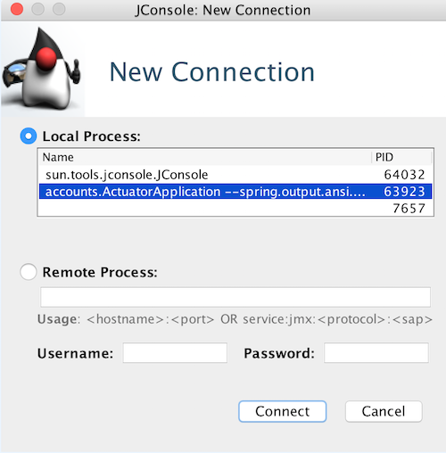
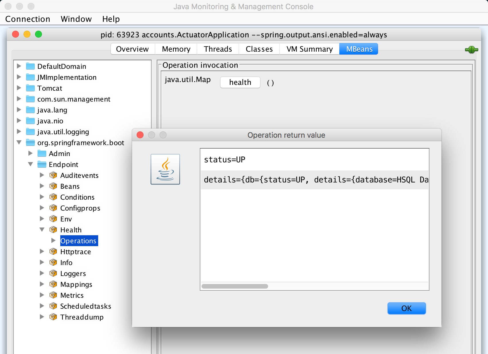

Purpose
In this lab you will gain experience with Spring Boot Actuator and its features.
Learning Outcomes
You will learn how to:
-
Configure Spring Boot Actuator
-
Expose some or all Actuator endpoints
-
Define custom metrics
-
Extend the /actuator/health endpoint to add custom health checks
You will be using the 44-actuator project.
Estimated time to complete: 30 minutes.
Use Case
All production applications should have health monitoring, and will often need metric gathering. Actuator gives us both of these. You will be enabling actuator in your project and implementing mechanisms to provide an additional custom metric to indicate the number of times Account details have been requested. Additionally, you will be creating a custom HealthIndicator and adding that to the overall health status that is obtained.
Get Started
Enabling Actuator
TODO-01 : Check dependencies
- In the
pom.xmlorbuild.gradlefor theactuatorproject, look for TODO-01. We have added the dependency on the Spring Boot Actuator starter.
TODO-02 : Review application
-
Run the application and using a browser that can display JSON (Firefox, Chrome), open http://localhost:8080/actuator/ and explore the links.
- If you prefer you can use
curlorPostmanto examine the links referred to in this lab.
- If you prefer you can use
-
Now visit the http://localhost:8080/actuator/metrics endpoint.
You will see an error on this page. Even though there are many valid endpoints, only the
infoandhealthendpoints are automatically exposed in Actuator.
Expose Actuator endpoints
TODO-03 Expose HTTP actuator endpoints.
-
In the
application.propertiesfile, expose themetricsandbeansendpoints by setting the appropriate Spring Boot property.- These are two of the many endpoints that can be exposed.
-
Once the application restarts, visit the /actuator/metrics endpoint again. Now you will see a list of all the metrics tracked by Actuator.
Try fetching the data for one of the metrics by constructing a url based on the name of the metric. For example, visit http://localhost:8080/actuator/metrics/jvm.memory.max.
-
View the beans our application has loaded by visiting http://localhost:8080/actuator/beans.
-
Revisit http://localhost:8080/actuator/info endpoint. You will now see that it no longer loads. This is because once the
management.endpoints.web.exposure.includeproperty has been set, the default accessible endpoints are no longer available.
TODO-04 Expose all HTTP actuator endpoints.
-
Modify the property again to expose all actuator endpoints. Once the application restarts, visit the following endpoints:
-
Use tags with
metricsendpoint -
Access some URL endpoints that are not existent and get metrics on them.
Change logging level
TODO-05 Change log level via ./actuator/loggers endpoint
-
Display logging level of
account.webpackageObserve that the
effectiveLevelis currently set toDEBUG{ "configuredLevel": null, "effectiveLevel": "DEBUG" } -
Add a log statement as shown below to the
accountSummary()method of the controller@GetMapping(value = "/accounts") public @ResponseBody List<Account> accountSummary() { logger.debug("Logging message within accountSummary()"); // add this line return accountManager.getAllAccounts(); } -
Once the application restarts, access
/accountsurl and verify that the log message gets displayed -
Change the logging level to
INFOusing eithercurlorHttpieorPostmancurl -i -XPOST -H"Content-Type: application/json" localhost:8080/actuator/loggers/accounts.web -d'{"configuredLevel": "INFO"}'http post localhost:8080/actuator/loggers/accounts.web configuredLevel=INFO -
Verify that the
effectiveLevelof theaccounts.webpackage is now changed toINFO{ "configuredLevel": "INFO", "effectiveLevel": "INFO" } -
Access
/accountsurl again and verify that the log message no longer gets displayed
Publish build information
Spring Boot Actuator’s info endpoint automatically publishes
information about your application specified in the
META-INF/build-info.properties file.
The META-INF/build-info.properties can be created by the
Spring Boot Maven or Gradle Plugin during build
TODO-06 Add Maven goal or Gradle task
-
If you are using Maven, add
build-infogoal<plugin> <groupId>org.springframework.boot</groupId> <artifactId>spring-boot-maven-plugin</artifactId> <executions> <execution> <goals> <goal>build-info</goal> </goals> </execution> </executions> </plugin>if you are using Gradle, add
BuildInfotaskspringBoot { buildInfo() } -
Rebuild the application preferably at the command line
./mvnw -pl 00-rewards-common -pl 01-rewards-db clean install ./mvnw -pl 44-actuator clean package./gradlew 44-actuator:clean 44-actuator:build -
Verify that
target/classes/META-INF/build-info.properties(for Maven) orbuild/resources/main/META-INF/build-info.properties(for Gradle) is created with build information -
Visit
infoendpoint and verify that the build info gets displayed
TODO-07 Add additonal build properties
-
If you are using Maven, add properties with appropriate values
<plugin> <groupId>org.springframework.boot</groupId> <artifactId>spring-boot-maven-plugin</artifactId> <executions> <execution> <goals> <goal>build-info</goal> </goals> <configuration> <additionalProperties> <name>actuator app</name> <javaVersion>1.8.0_144</javaVersion> <operatingSystem>Mac OS X (10.13.6)</operatingSystem> </additionalProperties> </configuration> </execution> </executions> </plugin> -
If you are using Gradle, you can use system properties
springBoot { buildInfo { properties { name = "actuator app" additional = [ javaVersion: System.properties['java.version'], operatingSystem: "${System.properties['os.name']} (${System.properties['os.version']})" ] } } } -
Add the custom properties to the
application.propertiesinfo.restaurant.location=New York info.restaurant.discountPercentage=10 -
Rebuild the application
-
Visit
infoendpoint and verify that additional properties are displayed
Define custom metrics - Counter
By default, Actuator exposes a number of useful but rather generic metrics. Often tracking metrics that are specific to your application's domain provides insights into operational, business, or other concerns.
Let's add a custom metric specific to our application that counts the number of times the account finder method is used.
TODO-08 : Add a counter with a tag
-
In the constructor of
AccountController, add an instance ofMeterRegistryas a second parameter. -
Using the
MeterRegistry, create a Counter calledaccount.fetchwith a tag oftype/fromCodekey/value pair by callingmeterRegistry.counter("account.fetch", "type", "fromCode");. -
Store the counter as a new data-member.
TODO-09 : Use the counter
- In the
accountDetails()method, callincrement()on the Counter.
TODO-10 : Run the test
- Verify that the tests in
AccountControllerTestspass. Particularly thetestHandleDetailsRequest(), which checks that the counter is working correctly.
TODO-11 : Verify the result
-
Once the application restarts, visit the (http://localhost:8080/actuator/metrics endpoint again. You should now see
account.fetchlisted. -
Visit the http://localhost:8080/actuator/metrics/account.fetch to view the data for your counter. This should display 0 since no accounts have been fetched yet.
-
Fetch an account by visiting http://localhost:8080/accounts/1.
-
Visit the (http://localhost:8080/actuator/metrics/account.fetch again, verify that the counter increase with each account fetch.
Try restarting your application. What happens to the counter?
Define custom metrics - Timer
TODO-12 : Add timer using @Timed annotation
-
Add the following annotation to the
accountSummary(..)method.@Timed(value="account.timer", extraTags = {"source", "accountSummary"}) -
Add the following annotation to the
accountDetails(..)method.@Timed(value="account.timer", extraTags = {"source", "accountDetails"})
TODO-13 : Verify the result
-
Once the application restarts, visit the localhost:8080/accounts/1 and localhost:8080/accounts for a few times
-
Visit the (http://localhost:8080/actuator/metrics/account.timer and verify the timer metric
Get detail health checks
TODO-14 : Add more details to the health check
-
Visit the /actuator/health endpoint.
By default there is very little info displayed at this endpoint.
-
In your
application.propertiesfile, enable more detailed health info by setting themanagement.endpoint.health.show-detailstoalways. -
Restart the application and refresh /actuator/health to see more health details.
Create custom health checks
You can extend the default health checks so that your application reports whether it is down or up based on custom criteria or domain logic.
In this case, we will determine the health of the application based on
whether there are any restaurants in the database.
If there are no restaurants, then the health status of the application
will be considered DOWN.
NOTE: Stop the ActuatorApplication to avoid it constantly
restarting whilst we add new classes.
TODO-15a and TODO-15b : Setup a test
-
Navigate to the
src/test/javadirectory. Inside theaccounts.webpackage, there is a class calledRestaurantHealthCheckTest. It is mostly written for you. -
Modify the code to use the
RestaurantHealthCheck.health()method in each test. The code will not compile yet - we have not written the code we are testing.
TODO-16a and TDO-16b : Implement RestaurantHealthCheck
-
Navigate to the
src/main/javadirectory. Inside theaccounts.webpackage create a class calledRestaurantHealthCheck. -
Modify the class to implements the
HealthIndicatorinterface. -
Implement the missing
health()method with the following logic:-
If there are one or more restaurants in the database, return
Health.up().build(). -
Otherwise return
Health.down().build(). -
You will need to pass the
RestaurantRepositoryinto this object via a new constructor.
-
-
Modify the test to match (TODO-15b).
-
Remove
@Disabledannotation from both tests -
The test should now pass.
TODO-17 : Access The Health Indicator
-
Restart the application.
-
Refresh the health endpoint. You should see that your application is
DOWNbecause there are no Restaurants in the database.
TODO-18/19 : Repeat with restaurants in the database
-
To populate your database with a Restaurant, change the
application.propertiesto setspring.datasource.dataproperty withclasspath:/data-with-restaurants.sql. -
Once the server restarts refresh the health endpoint. You should now see that your application health reports
UP. -
Verify that all tests in the
actuatorproject pass.
Secure Actuator endpoints
TODO-20 : Add security configuration
-
Add code to provide access control to actuator endpoints
@Override protected void configure(HttpSecurity http) throws Exception { http.authorizeRequests() .requestMatchers(EndpointRequest.to(HealthEndpoint.class, InfoEndpoint.class, PrometheusScrapeEndpoint.class)).permitAll() .requestMatchers(EndpointRequest.to(ConditionsReportEndpoint.class)).hasRole("ADMIN") .requestMatchers(EndpointRequest.toAnyEndpoint()).hasRole("ACTUATOR") .anyRequest().authenticated() .and() .httpBasic(); }
TODO-21 : Run the tests
-
Take some time to understand what each test is for
-
Remove @Disabled annotation from each test and run it
-
Make sure all tests pass
Summary
In this lab you have configured Spring Boot Actuator. You have also leveraged Spring Boot Actuator to give detailed information about application metrics and customized health stats.
Congratulations, you are done with the lab. If this were a production application, one logical next step would be to integrate Actuator with an external monitoring system.
Optional exercises
Do the following exercises if you have an extra time.
TODO-22 (Optional) : Experiment with HealthIndicator
-
Include the restaurant count as extra detail in the health endpoint. Have a look at the
Healthclass to see how this might work. -
Instead of returning
DOWNwhen there are no restaurants, use a custom status (e.g.NO_RESTAURANTS). -
When there are no restaurants in the DB, what overall status is returned for the application? Fix this issue by adjusting the order of precedence for the health statuses using
management.endpoint.health.status.orderproperty in theapplication.propertiesfile.
TODO-23 (Optional) : Use AOP for counting logic
If you are short on time, skip this step.
In general, mixing up different concerns (controller logic and counter logic in this example code) is not considered a good practice: it violates single responsibility principle. Instead, usage of AOP provides cleaner code.
-
Add
spring-boot-starter-aopstarter to thepom.xmlor thebuild.gradle -
Create an aspect, through which
account.fetchcounter, which has a tag oftype/fromAspectkey/value pair, gets incremented everytimeaccountSummarymethod of theAccountControllerclass is invoked -
Access
/accountsseveral times and verify the metrics of/actuator/metrics/account.fetch?tag=type:fromAspect
TODO-24 (Optional) : Using JMX and JConsole
If you are short on time, skip this step.
-
Open a terminal window and run
jconsole. Accept the insecure connection if prompted
Figure 1: Starting JConsole
-
Select the
MBeanstab, find theorg.springframework.bootfolder, then open theEndpointsub-folder. Note that all actuator endpoints ARE exposed for JMX
Figure 2: Spring Boot endpoints in JConsole